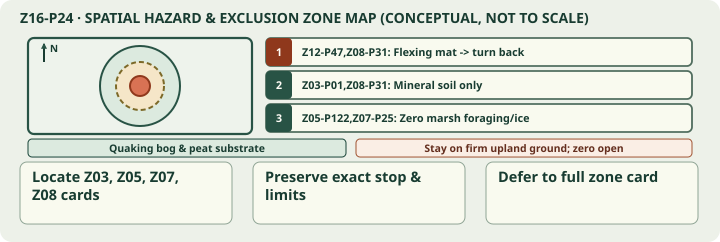

Z16-P24 · Field reference atlas · New manuscript
Wetland, Quaking Bog, Peat-Fire and Swamp Hazard Index
Locate the original encyclopedia cards for wetland, Quaking Bog, Peat-Fire and Swamp Hazard Index.
When it applies · Offline reference lookup. The linked chapter defines the situation, audience and limits.
Equipment · Offline reader or the complete linked source cards in print.

Actions
- Open Z12-P47 for distinguish firm upland edges from quaking bogs, fens and deep marsh muck; Z08-P31 for peat, Organic Muck and Unstable Wetland Substrates.[A10, X12, R02]
- Open Z05-P122 for spotted Water Hemlock (Cicuta maculata): Hazard Recognition; Z07-P25 for protecting Dens, Beaver Lodges, Wetlands and Sensitive Habitats.[A10, B11, L01]
- Read the linked card’s applicability, equipment and stop conditions together. Keep review and source limitations attached to any excerpt.[A10, ED]
Failure recognition · Acting on a keyword or title while overlooking an upstream exception or stop condition.[A10, ED]
Verify · Confirm the exact page ID and read the full conditions before using the reference.[A10, ED]
Stop or change course · If the situation falls outside a linked card’s conditions or its stop rule applies, stop using this index as a decision aid. Follow the full card and current local directions.[A10, ED]
Evidence and editorial notes
- A10 · FEMA / Ready.gov · Make a Plan (current web edition)
- Section: Offline reader navigation, historical lineage, and HOLD transparency · Conditions: Using the complete 16-zone offline archive, zone readers, and print proofs
Support: Navigation aids expose draft status, reconstruction lineage, open diagnostic photo needs, and pending specialist holds on every lookup path.
Limitations: This index entry does not independently establish any safety, regulatory or diagnostic instruction. · Conflicting evidence: None noted.
Editorial note: Index design and cross-reference policy. Substantive directions come from linked upstream chapter claims. · Specialist reviewer: Accessibility, print QA, and editorial reviewer
Primary source · checked 2026-11-24 - B11 · CDC · Water Hemlock Poisoning — Maine, 1992 (1994)
- Section: Maine case description and editorial note · Conditions: Suspected water-hemlock ingestion
Support: Water hemlock ingestion can cause severe poisoning including seizures. Suspected poisoning needs prompt emergency or poison-centre advice.
Limitations: The case concerns Cicuta maculata. It cannot identify a plant outdoors or establish Conium toxin mechanism, dose, or onset. · Conflicting evidence: Conditions are recorded in the A03 audit.
Editorial note: Mandatory Z05 lethal Apiaceae stop rule. · Specialist reviewer: Botanist and medical toxicologist
Primary source · checked 2026-11-25 - L01 · Minnesota DNR · Minnesota Trapping Regulations and Fur Harvest Rules (Current web edition)
- Section: Minnesota trapping licensing, seasons, and statutory limits · Conditions: Any regulated trapping activity or legal reference in Minnesota
Support: Trapping is strictly regulated by license, season, species, trap type, set location, check intervals, and landowner permission; unauthorized trapping is illegal.
Limitations: Emergency narratives never create an exemption to set traps or snares; verify current statute and DNR handbook every season. · Conflicting evidence: None noted.
Editorial note: Primary Z07 legal boundary. · Specialist reviewer: Wildlife law and DNR enforcement reviewer
Primary source · checked 2026-11-25 - R02 · Minnesota DNR · Minnesota Geology and Glacial History Overview (Current web edition)
- Section: Glacial drift and landscape materials · Conditions: Glacial till, moraines, outwash, and lake-plain deposits
Support: Glacial transport mixes erratics and cobbles from distant source formations across Minnesota soils and stream beds.
Limitations: Cobble location does not prove local bedrock origin or uniform internal stone integrity. · Conflicting evidence: None noted.
Editorial note: Separates erratic cobbles from bedrock strata. · Specialist reviewer: Quaternary geologist
Primary source · checked 2026-11-25 - X12 · US EPA · What is a Wetland (current web edition)
- Section: What is a Wetland > Bogs, Fens, Swamps and Marshes · Conditions: Upper Midwest boreal bogs, marshes, beaver ponds and coastal wetlands
Support: Wetlands feature saturated hydric soils, floating vegetation mats (quaking bogs), hidden channels and fluctuating water tables that conceal deep muck, unstable footing and slow-draining floodwaters.
Limitations: Winter ice over bogs and wetlands is especially erratic due to decaying organic heat and seepage. · Conflicting evidence: Aligns with B014-P12 and NPS-WETLAND.
Editorial note: Core wetland terrain and quaking-bog hazard evidence in Z12. · Specialist reviewer: Wetland ecology and search and rescue
Primary source · checked 2026-11-24
Source lineage · New manuscript (Z16 P20 hazard index) · Classification · New manuscript.